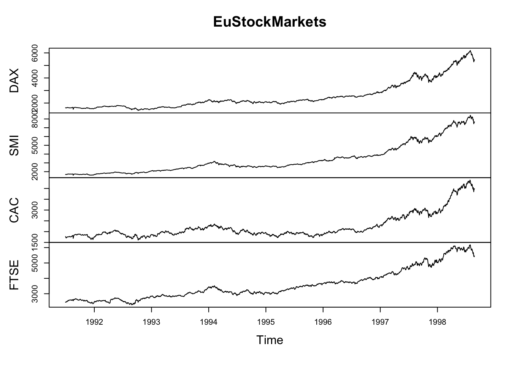
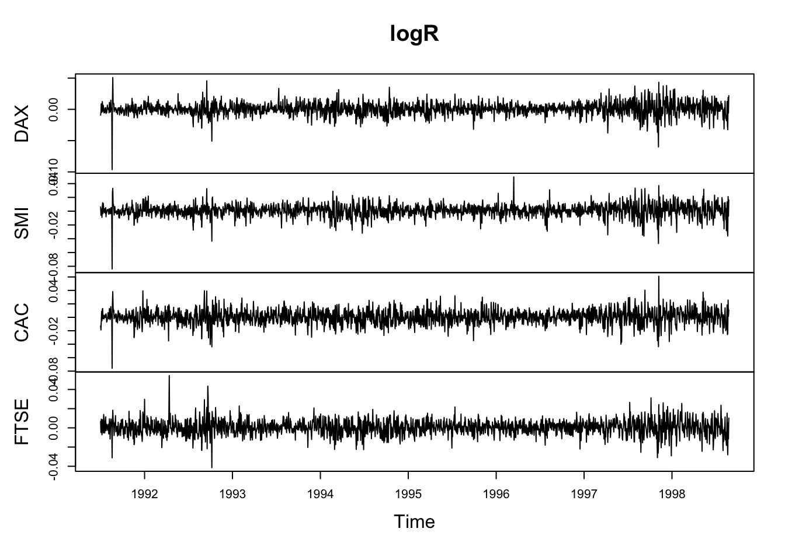
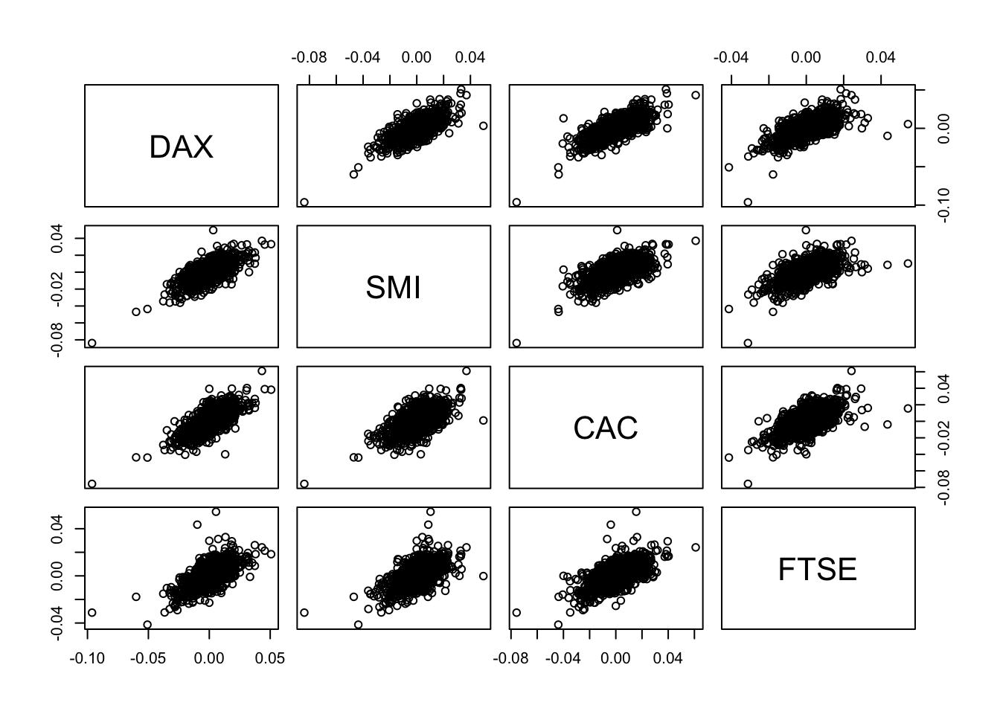
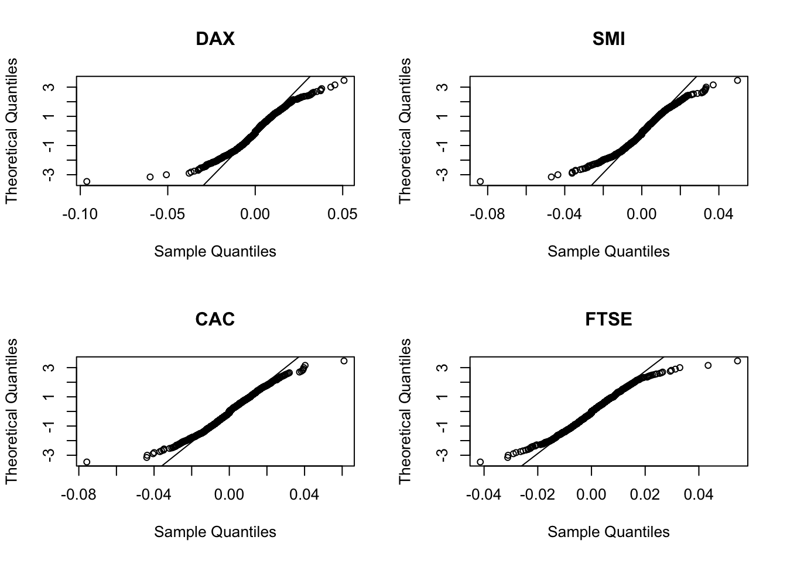
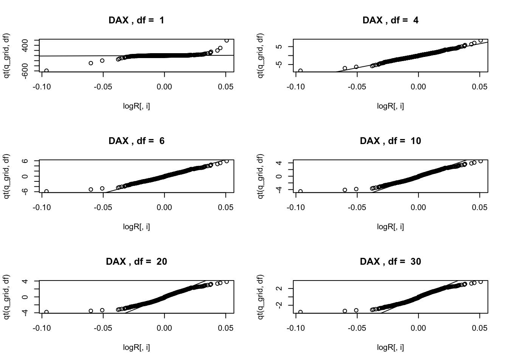
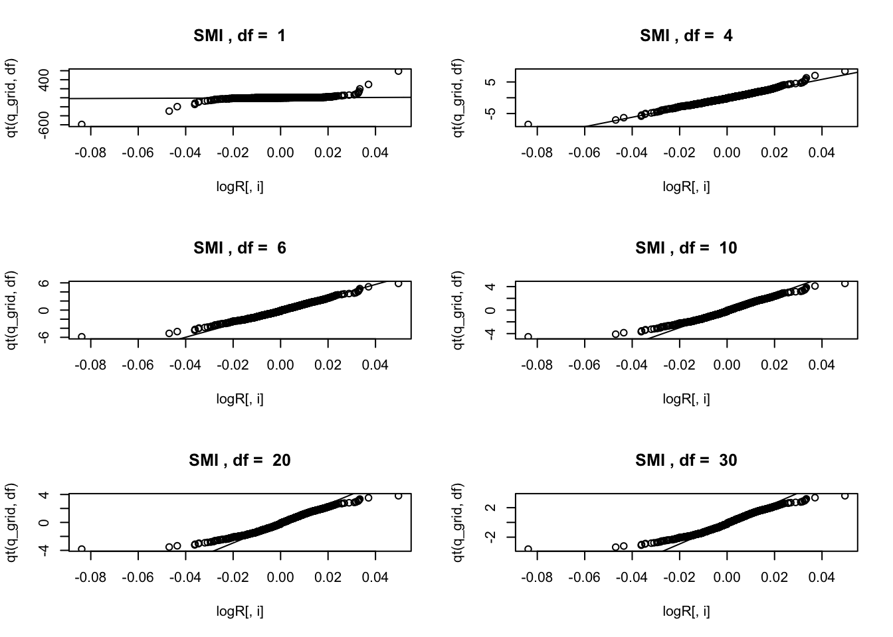
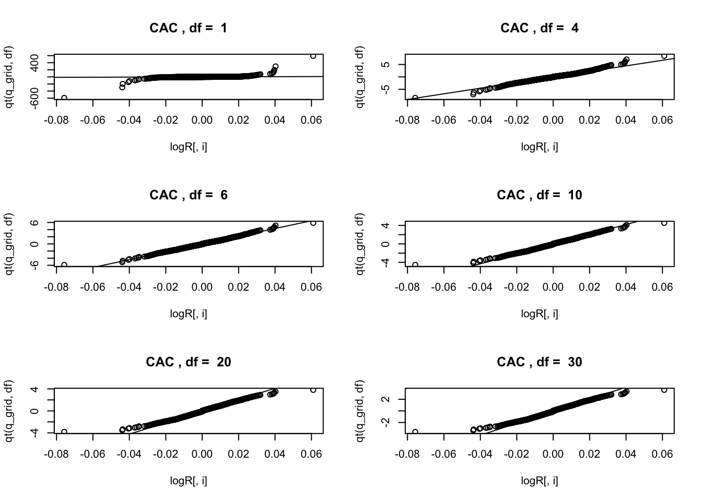
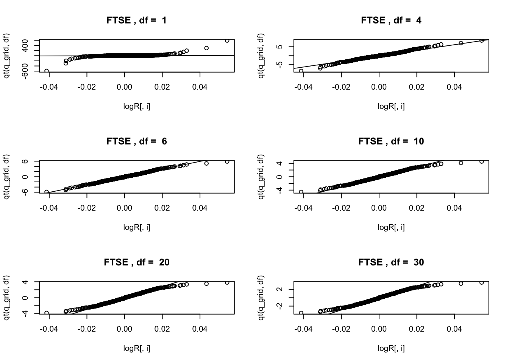
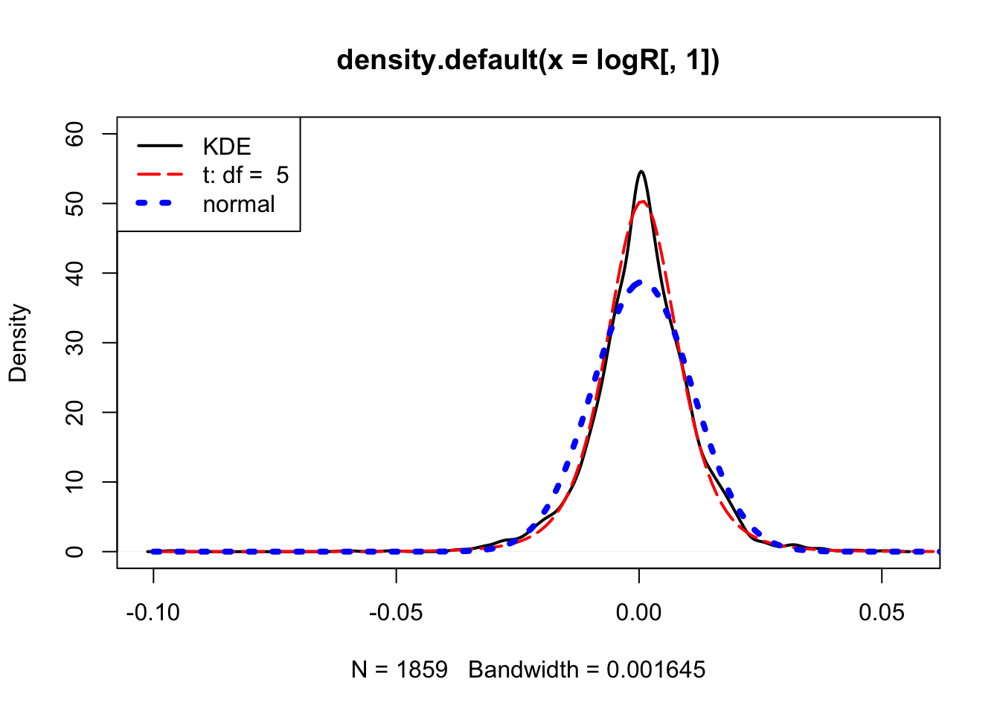

Untitled
GitHub Documents
This is an R Markdown format used for publishing markdown documents to GitHub. When you click the Knit button all R code chunks are run and a markdown file (.md) suitable for publishing to GitHub is generated.
Including Code
You can include R code in the document as follows:
summary(cars)## speed dist
## Min. : 4.0 Min. : 2.00
## 1st Qu.:12.0 1st Qu.: 26.00
## Median :15.0 Median : 36.00
## Mean :15.4 Mean : 42.98
## 3rd Qu.:19.0 3rd Qu.: 56.00
## Max. :25.0 Max. :120.00Including Plots
You can also embed plots, for example:

Note that the echo = FALSE parameter was added to the code chunk to prevent printing of the R code that generated the plot.
data(EuStockMarkets)
mode(EuStockMarkets)## [1] "numeric"class(EuStockMarkets)## [1] "mts" "ts" "matrix"plot(EuStockMarkets)
#pdf("EuStocks.pdf", width = 6, height = 5)
plot(EuStockMarkets)
logR = diff(log(EuStockMarkets))
plot(logR)
plot(as.data.frame(logR))
par(mfrow=c(2, 2))
for(i in colnames(logR))
{
print(i)
qqnorm(logR[ ,i], datax = T, main = i)
qqline(logR[ ,i], datax = T)
print(shapiro.test(logR[ ,i]))
}## [1] "DAX"##
## Shapiro-Wilk normality test
##
## data: logR[, i]
## W = 0.95384, p-value < 2.2e-16
##
## [1] "SMI"##
## Shapiro-Wilk normality test
##
## data: logR[, i]
## W = 0.95537, p-value < 2.2e-16
##
## [1] "CAC"##
## Shapiro-Wilk normality test
##
## data: logR[, i]
## W = 0.98203, p-value = 1.574e-14
##
## [1] "FTSE"
##
## Shapiro-Wilk normality test
##
## data: logR[, i]
## W = 0.97994, p-value = 1.754e-15n=dim(logR)[1]
q_grid=(1:n)/(n+1)
df_grid = c(1, 4, 6, 10, 20, 30)
index.names = dimnames(logR)[[2]]
for(i in 1:4){
# dev.new()
par(mfrow = c(3, 2))
for(df in df_grid){
qqplot(logR[,i], qt(q_grid,df),
main = paste(index.names[i], ", df = ", df) )
abline(lm(qt(c(0.25, 0.75), df = df) ~
quantile(logR[,i], c(0.25, 0.75))))
}
}
library("fGarch")## Warning: package 'fGarch' was built under R version 3.4.4## Loading required package: timeDate## Loading required package: timeSeries## Loading required package: fBasicsx=seq(-0.1, 0.1,by = 0.001)
par(mfrow = c(1, 1))
df=5
mad_t = mad(logR[ , 1],
constant = sqrt(df / (df - 2)) / qt(0.75, df))
plot(density(logR[ , 1]), lwd = 2, ylim = c(0, 60))
lines(x, dstd(x, mean = mean(logR[,1]), sd = mad_t, nu = df),
lty = 5, lwd = 2, col = "red")
lines(x, dnorm(x, mean = mean(logR[ ,1]), sd = sd(logR[ ,1])),
lty = 3, lwd = 4, col = "blue")
legend("topleft", c("KDE", paste("t: df = ",df), "normal"),
lwd = c(2, 2, 4), lty = c(1, 5, 3),
col = c("black", "red", "blue"))